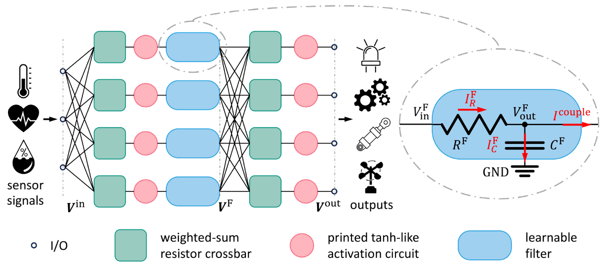
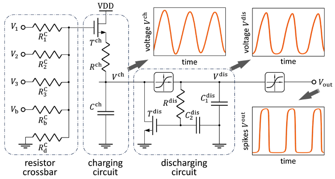

Most of the existing works on the design and optimization of
neuromorphic circuits are still limited in the computing paradigm of
MLPs. This strongly limits the applications of the neuromorphic
circuits, because many tasks, such as time-series processing, are
beyond the capability of MLPs.
Recurrent neuromorphic circuit

Figure 1: Neuromorphic temporal processing block with learnable filters.
The essential problem of the existing neuromorphic circuits is that
they lack the components with time dependencies. I.e., the circuit
cannot memorize or store the historical input information. To
address this problem, we augmented the neuromorphic circuits with
learnable filters (figure 1).
The mathematical model of this temporal processing block is
expressed by
forming an instance of the recurrent neural network (RNN). The
proposed circuit is able to efficiently process temporal information
and reaches comparable performance to the classic Elman RNN.
Spiking neuromorphic circuit
Spiking neural networks are the most biologically plausible neural
networks, which allows event-based signal processing, and thus
become energy-efficient. Also, the spike-based information delivery
is more robust to noise. Therefore, we proposed a spiking
neuromorphic circuit (figure 2).

Figure 2: Schematic of the spiking neuromorphic circuit.
The proposed circuit can effectively process signals and achieve
comparable performance to previous MLP-like neuromorphic circuits
with much less energy consumption.
Related Materials
H. Zhaoet al. Towards Temporal Information
Processing - Printed Neuromorphic Circuit with Learnable
Filters. In Proceedings of International Symposium on Nanoscale
Architectures (NanoArch), ACM, 2023.
[PDF][Github]
P. Pal, H. Zhaoet al. Analog Printed Spiking
Neuromorphic Circuits. In Proceedings of Design, Automation &
Test in Europe Conference & Exhibition (DATE), IEEE, 2024.
[PDF][Github]